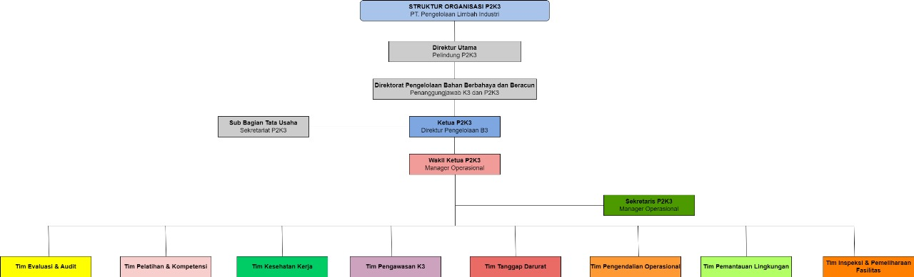

Penjelasan Struktur P2K3
Struktur organisasi ini menjelaskan pembagian tugas, peran, dan tanggung jawab tiap tim dalam upaya penerapan Keselamatan dan Kesehatan Kerja di perusahaan pengolahan limbah industri.
Tugas & Tanggung Jawab Tiap Tim
Berikut uraian lengkap tugas setiap tim
Tim Evaluasi & Audit P2K3
- Audit internal K3LH secara berkala (min. 2x per tahun).
- Investigasi kecelakaan kerja dan insiden lingkungan.
- Menyusun dan memperbarui HIRA di seluruh area kerja.
- Evaluasi kepatuhan K3 & lingkungan terhadap regulasi.
- Evaluasi manifest limbah B3 & dokumen perizinan.
- Laporan K3LH ke Disnaker & KLHK.
- Audit ISO 14001, ISO 45001 & SMK3.
- Evaluasi efektivitas program P2K3.
Tim Pelatihan & Kompetensi
- Menyusun program pelatihan K3 tahunan.
- Safety Induction untuk karyawan baru & kontraktor.
- Pelatihan handling limbah B3.
- Pelatihan penggunaan APD.
- Pelatihan Emergency Response & P3K.
- Sertifikasi kompetensi (K3 Umum, K3 Kimia, dll).
- Melakukan Safety Talk & Toolbox Meeting rutin.
Tim Kesehatan Kerja
- Medical Check Up rutin.
- Pemeriksaan kesehatan pekerja terpapar B3.
- Monitoring kesehatan area high risk.
- Hygiene industri: debu, gas, kebisingan.
- Penyuluhan kesehatan & pengelolaan klinik.
- Investigasi Penyakit Akibat Kerja (PAK).
Tim Pengawasan K3
- Inspeksi harian APD.
- Pengawasan Permit to Work.
- Inspeksi peralatan kerja & scaffolding.
- Safety patrol & JSA pekerjaan berisiko tinggi.
- Pengawasan operasional di TPS Limbah B3 & IPAL.
Tim Tanggap Darurat (ERT)
- Menyusun Emergency Response Plan (ERP).
- Siaga 24/7 untuk keadaan darurat.
- Penanganan tumpahan limbah B3.
- Pemadaman kebakaran menggunakan APAR & hydrant.
- Evakuasi korban ke assembly point.
- Simulasi emergency minimal 2x per tahun.
Tim Pengendalian Operasional
- Pengawasan incinerator & proses treatment limbah.
- Stabilisasi/solidifikasi limbah B3.
- Operasional transportasi limbah B3.
- Pengendalian WWTP & parameter lingkungan.
- Pengawasan SOP operasional seluruh unit proses.
Tim Pemantauan Lingkungan
- Sampling & monitoring air limbah.
- Pengukuran emisi udara & kualitas udara ambien.
- Pengelolaan lumpur B3 dari IPAL.
- Pelaporan PROPER & SPPL.
- Program 3R dan penghijauan.
Tim Inspeksi & Pemeliharaan Fasilitas
- Inspeksi incinerator, IPAL, gudang B3, dan instalasi.
- Maintenance preventive semua equipment kritikal.
- Kalibrasi alat ukur & inspeksi safety device.
- Maintenance forklift & alat berat.
- Pengelolaan logbook maintenance.
Sekretariat P2K3
- Mengatur jadwal rapat P2K3.
- Membuat notulensi & dokumentasi.
- Laporan bulanan kinerja P2K3.
- Mengelola database insiden & dokumen K3.
- Mempersiapkan audit eksternal.